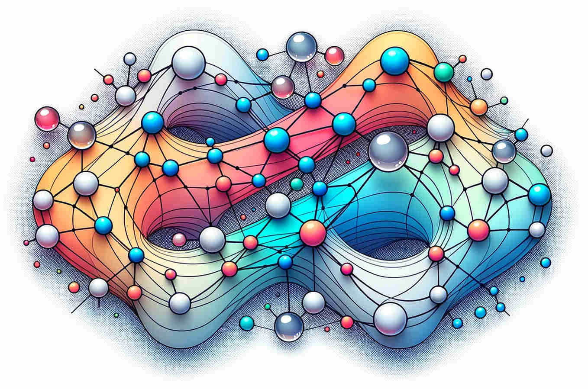

State Space Models

State Space Models:
Consider a Markov chain \((X_t, Y_t)\) with \(X_t \in \mathcal{X}\) and \(Y_t \in \mathcal{Y}\) with initial distribution \(p(X_0 \in dx_0) = \mu_0(x_0) \, dx_0\) and described by the dynamics
\[ \begin{align} \left\{ \begin{aligned} x_{t+1} &\sim f(x_{t+1} | x_t) \\ y_{t+1} &\sim g(y_{t+1} | x_{t+1}) \end{aligned} \right. \end{align} \tag{1}\]
for some transition and observation densities \(f(\cdot | \cdot)\) and \(g(\cdot | \cdot)\). These functions could be time-dependent but we will assume not for lightening notations.
Filtering:
Consider an empirical approximation of the filtering distribution \(p(x_t | y_{0:t})\) using \(N \geq 1\) particles \((x^1_{t}, \ldots, x^N_{t})\),
\[ p(x_t | y_{0:t}) \approx \sum_{i=1}^N w_{i,t} \, \delta_{x^i_{t}}(x_t). \]
The filtering distribution at time \((t+1)\) follows the recursion:
\[ p(x_{t+1} | y_{0:t+1}) \propto \int p(x_{t} | y_{0:t}) \, f(x_{t+1} | x_t) \, g(y_{t+1} | x_t) \, dx_t. \]
This is the \(x_{t+1}\)-marginal of the joint density proportional to \(p(x_{t} | y_{0:t}) \, f(x_{t+1} | x_t) \, g(y_{t+1} | x_t)\). One can approximate this joint density using importance sampling with a proposal \(p(x_{t} | y_{0:t}) \, q_t(x_{t+1} | x_t)\), where \(q_t(x_{t+1} | x_t)\) is any reasonable Markov kernel. The choice of \(q_t(x_{t+1} | x_t) \equiv f(x_{t+1} | x_t)\) leads to the bootstrap particle filter. Alternatively, \(q_t(x_{t+1} | x_t) = p(x_{t+1} | x_t, y_{t+1})\) can yield better estimates, but is often hard to implement, though approximating it can be a viable strategy.
Using these methods, the filtering distribution at time \((t+1)\) can be approximated by a new set of particles \(\sum_{i=1}^N w_{i,t+1} \, \delta_{x^i_{t+1}}(x_{t+1})\), where \(x^{i}_{t+1} \sim q_t(x^{i}_{t+1} | x^{i}_{t})\) and weights are calculated as:
\[ w^i_{t+1} \propto \frac{f(x^{i}_{t+1} | x^{i}_{t}) \, g(y_{t+1} | x^i_{t+1})}{q_t(x^{i}_{t+1} | x^{i}_{t})}. \]
Smoothing:
When estimating parameters in time-series models, it is often crucial to evaluate sums like
\[ \sum_{t=0}^{t-1} \mathbb{E}[ s_t(x_t, x_{t+1}) | y_{0:T}] \]
where \(s_t(\cdot, \cdot)\) is a specific function. For instance, in the Expectation-Maximization (EM) algorithm, we have \(s_t(x_t, x_{t+1}) = \log[ f(x_{t+1}|x_t) , g(y_{t+1}|x_{t+1})]\). Essentially, this means it is important to accurately approximate the \((x_t, x_{t+1})\)-marginals of the smoothing distribution.
Forward only and Fixed-Lag approximation:
A standard filtering approach on path-space, often referred to as the “poor man’s smoother”, can be used to approximate the full smoothing distribution. However, this method often leads to path degeneracy, especially for smoothing marginals at time \(t \ll T\), which are typically very poor. In cases where the State-Space Model (SSM) has a “forgetting property”, the fixed-lag approximation can be useful. This is expressed as:
\[ p(x_t | y_{0:T}) \; \approx \; p(x_t | y_{0:{t+L}}). \]
Here, \(L\) is the lag parameter, usually chosen to be quite small. To implement this fixed-lag approximation, one simply needs to run a filtering method and track the last \(L\) ancestors; that it straightforward since the SSM in Equation 1 can readily be extended to a SSM describing the dynamics of \((x_{t-L}, \ldots, x_{t-1}, x_t)\).
Forward-Filtering Backward Smoothing:
The smoothing distribution satisfy the following backward recursion
\[ \begin{align} p(x_t| y_{0:T}) &= \int p(x_t, x_{t+1} | y_{0:T}) \, dx_{t+1}\\ &= \underbrace{p(x_t | y_{1:t})}_{\text{(filtering)}} \, \int \, \underbrace{p(x_{t+1} | y_{0:T})}_{\text{(smoothing)}} \, \frac{f(x_{t+1}|x_t)}{p(x_{t+1} | y_{1:t})} \, dx_{t+1}. \end{align} \tag{2}\]
To exploit this backward recursion, one can first a standard filtering methods to obtain particle approximations of all the filtering distributions. It is then straightforward to discretize Equation 2 to either:
generate a single trajectory from the smoothing distribution starting from the final time \(T\). Generating this single smoothing trajectory can be implementing in \(\mathcal{O}(N \, T)\).
reweight the particle approximations of the filtering distributions to obtain particle approximation of the marginal smoothing distributions of \(x_t\) or \((x_t, x_{t+1})\). This procedure can be implemented in \(\mathcal{O}(N^2 \, T)\)